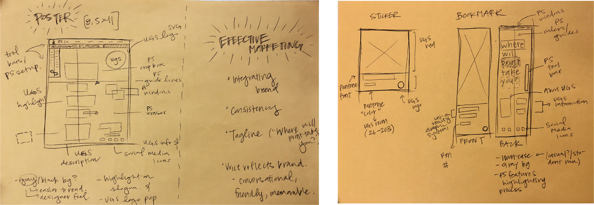
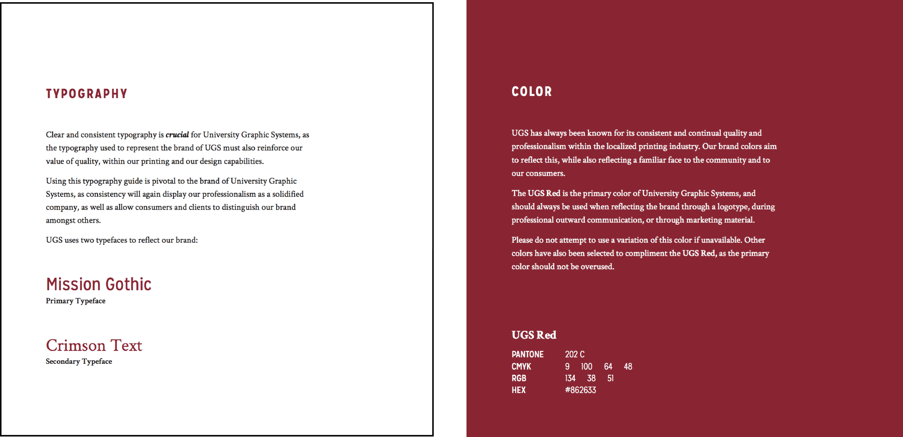

University Graphic Systems
Marketing, Social Media Marketing, Print Campaign
• Adobe Illustrator
• Adobe Photoshop
ugs.calpoly.edu
As my time as a Marketing Intern, I executed a 10-week marketing campaign alongside three other interns while shadowing the Marketing Manager of University Graphic Systems. We wanted to raise awareness and build UGS up as a useful, efficient, and quality service for students to print with. Alongside the collateral, we also produced multiple short films that were posted on the company's Instagram and Facebook reflecting our slogan "Where will print take you?" We tracked analytics and presented our findings and project at the end of the quarter.
Role:
I was head of Material Design, and designed the collateral which comprised of stickers, bookmarks, and posters seen by 20,000+ students. I made sure to keep brand consistency


Process

Brand Consistency
